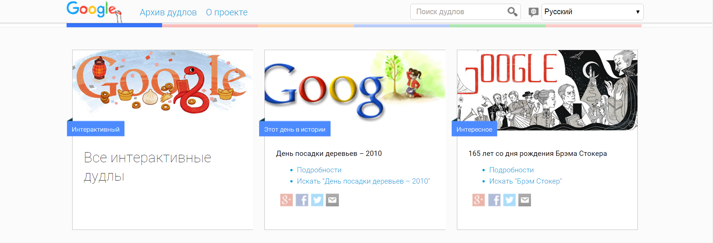

| Общие | |
| Название по IUPAC | 2-аминобутандиовая кислота |
| Краткое название | Асп, Asp, D |
| Хим.формула | HOOCCH2CH(NH2)COOH |
| Брутто-формула | С4H7NO4 |
| Физические свойства | |
| Молярная масса | 133.10 г/моль |
| Температура плавления | 270 °C |
| Растворимость в воде, 25°C | 4.5 г/л |
| Классификация | |
| PubChem | 5960 |
Общие сведения
Аспарагиновая кислота — алифатическая аминокислота, одна из 20 протеиногенных аминокислот организма. Встречается во всех организмах в свободном виде и в составе белков. Кроме того, выполняет роль нейромедиатора в центральной нервной системе. [1].
Формы аминокислот в зависимости от pH
Аспарагиновая кислота относится к отрицательно заряженным аминокислотам. pKa = 3.65.
В апплете, представленном ниже отображаются структуры соответствующих (де)протонированных форм в зависимости от pH. Для запуска необходимо нажать кнопку "Start script", отобразить названия тяжелых атомов — "Show labels".
Белок-белковые и ДНК-белковые контакты
Немного хорошего, продуманного текста.
|  |
| первый столбец | торой столбец |
| [ILE] | 151.0 |
| [ARG] | 153.0 |
| [GLN] | 158.1 |
| [LEU] | 163.0 |
| [ALA] | 138.7 |
| [VAL] | 150.6 |
| [LYS] | 164.0 |
| [TRP] | 173.0 |